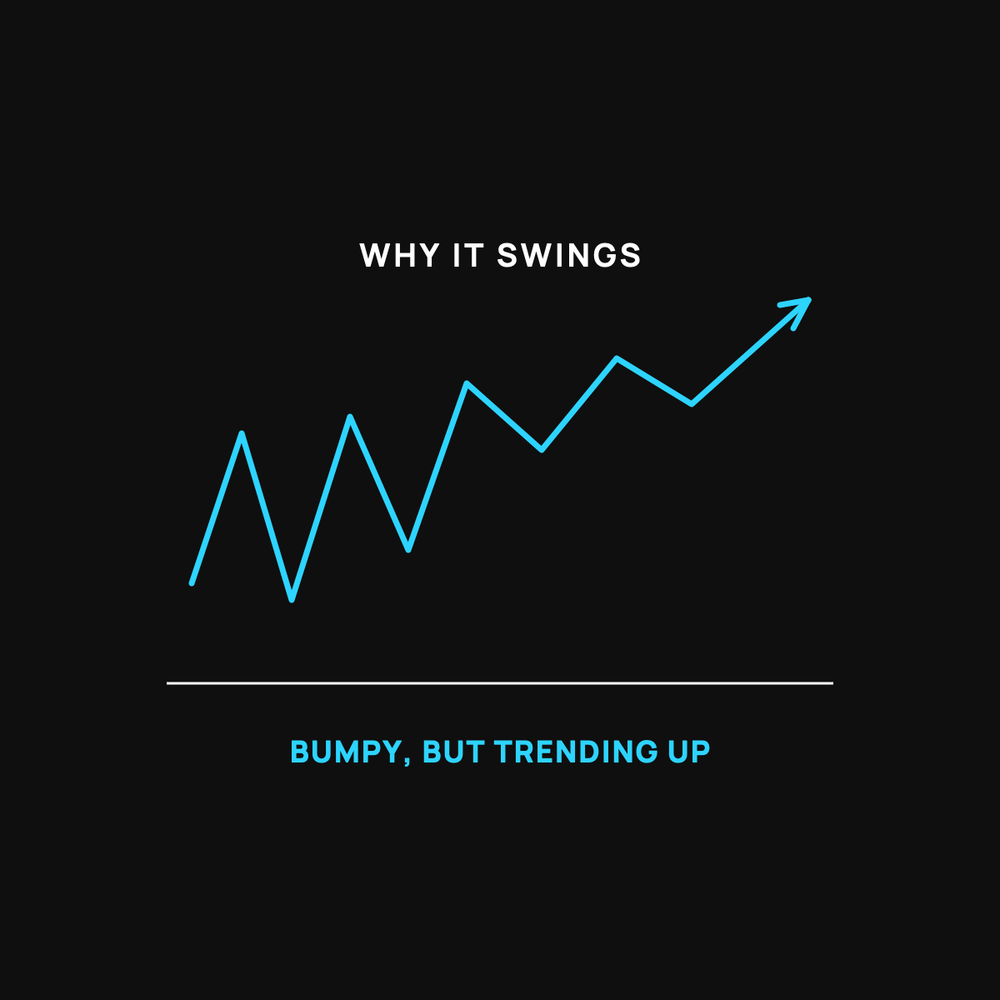

Bitcoin's Wild Price Swings, Explained Calmly
A new road is bumpy before it's paved. Here's the calm read on volatility.

Bitcoin's price jumps around. A lot. It can be up big one month and down big the next, enough to make anybody nervous. That's real, and it's worth understanding calmly instead of getting swept up in the drama. Here's why it swings, and what it does and doesn't tell you.
The new road that isn't paved yet
Think about a brand-new dirt road, freshly cut, not paved. The ride is bumpy. You feel every rock. That's not because the road is going nowhere. It's because it's new, and new roads are rough before they get graded and paved.
Bitcoin is a young thing compared to dollars or gold. It's a road still being built. Fewer people use it, so it takes less to push the price around. A big buyer or a scary headline can swing it hard, the way a single pothole rattles you on a dirt road but wouldn't on a smooth highway.
Why "young and small" means "bumpy"
Here's the mechanism, plain and simple. When something is used by a lot of people and holds a lot of money, it takes a huge push to move its price. When something is newer and smaller, the same-sized push moves it much more. Less traffic, bigger bumps.
Bitcoin is still small compared to the giant, established stuff. So the swings are bigger. As more people use it over the years, the general expectation is that the ride smooths out, the way a road gets smoother once it's paved and busy. Nobody can promise that, but that's the logic.
What the swings do and don't mean
A wild ride does not automatically mean something is broken, and a smooth ride does not automatically mean something is safe. Plenty of calm, steady things have quietly lost value, and plenty of bumpy things have climbed over time. The bumps are about how new and small the road is, not a verdict on where it's headed.
What the swings do mean for you is practical: don't put in money you'll need soon, because you can't control which day you'll need it, and it might be a down day. This is exactly why I don't try to time these swings, and buy a little at a time instead. I explained that calm approach here.
The calm way to handle it
The swings are only scary if you're watching the price every day and using money you can't spare. Take away both of those and the drama mostly disappears. Use money you won't miss, buy slowly, and don't stare at the screen. Let the road get paved without you standing in the middle of it. And keep the saving-versus-gambling line honest, which I do here.
The takeaway
Bitcoin swings because it's a young, small road that isn't paved yet, so every bump feels big. That's not proof it's broken, and calm isn't proof of safety. The swings just mean: use money you won't need soon, buy a little at a time, and stop watching the daily price. The bumps feel a lot smaller from there.
New here?
Normaltown USA is plain-English money and healthcare help for normal people. No jargon, no hype. Start here.